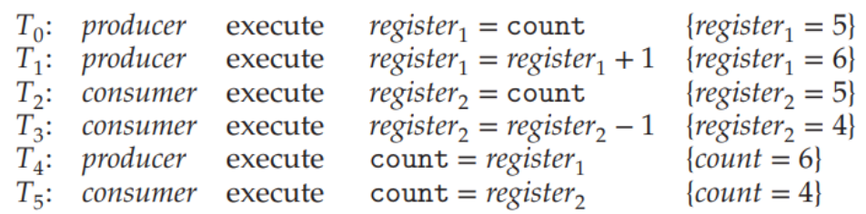
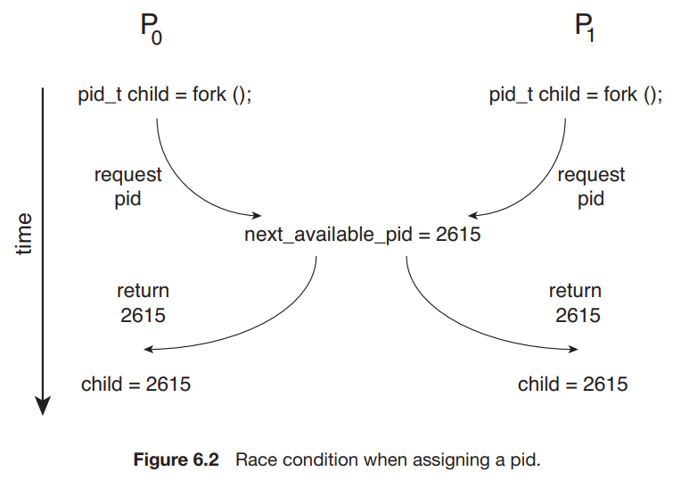
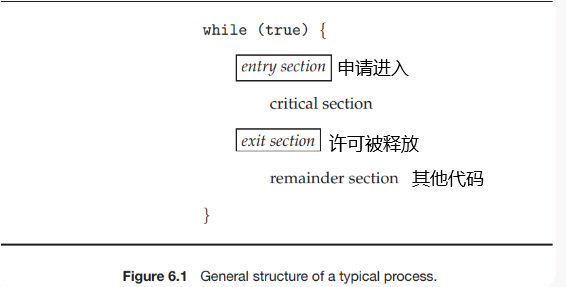
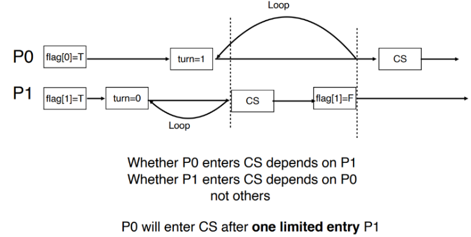
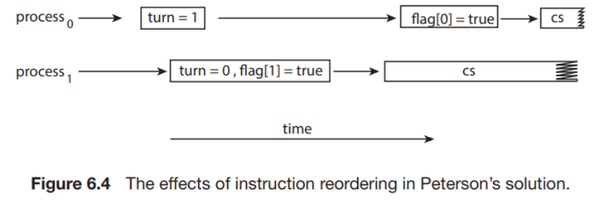
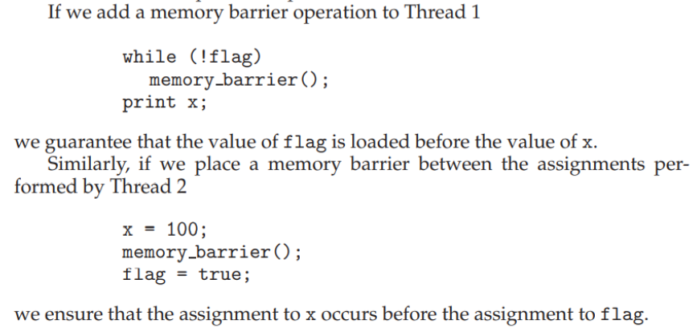
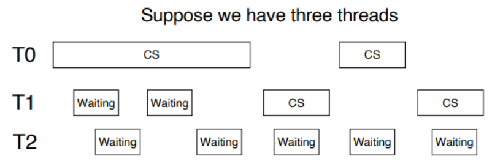
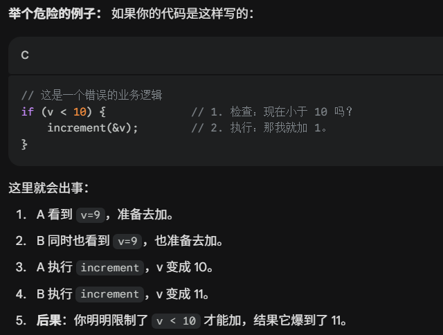

- 并发: 同时运行但不一定完全对齐重叠,
- 并行: 更加严格
「同步」的核心意义是，规定进程所做的工作之间的顺序或者先序关系，从而防止一些非法情况的发生。
为什么需要同步
- Cooperating Process 是可以影响系统中其他运行进程或被其他进程影响的进程。
- Cooperating processes 会共同使用一些数据
- 可能是直接使用同一段地址空间（代码+数据）
- 或者是通过共享的内存或信息传递来共用一些数据。
- 因为数据的一致性需要 cooperating processes 有序的运行[与操作的时序有关]。对数据的同时访问 (concurrent access) 可能会导致 data inconsistency
race condition:
- 多个进程同时操控同一个数据，因而结果取决于每一种操控的出现顺序的情形
- 防止 race condition，我们需要保证同一时间只有一个进程可以操控某个变量。
Bounded-buffer Problem中的race condition问题
给定两个进程：producer 和 consumer，它们共用大小为 的 buffer。Producer 生产数据放入 buffer，consumer 从 buffer 取出数据从而使用之。
该问题需要保证：producer 不应当在 buffer 满时放入数据，consumer 也不应当在 buffer 空时取出数据。
我们可能想要像这样实现这两个进程：
/* Producer Process */
while (true) {
/* produce an item in next_produced */
while (count == BUFFER_SIZE)
; /* do nothing */
//直到消费者取走一个数据,导致count<buffer_size
buffer[in] = next_produced;
in = (in + 1) % BUFFER_SIZE;
count++;
}
/* Consumer Process */
while (true) {
while (count == 0)
; /* do nothing */
next_consumed = buffer[out];
out = (out + 1) % BUFFER_SIZE;
count--;
/* consume the item in next_consumed */
}count++ (生产者做的) ：
register1 = count: 把内存里的数搬到 CPU 寄存器里register1 = register1 + 1: 寄存器加 1count = register1: 把算好的新值写回内存
count--(消费者做的) 同理，也是搬运、减 1、写回。
但是一系列操作是可以被打断的,所以可能会有下述运行顺序导致count值发生错误
kernel中请求子进程pid中的race condition问题

同时都去获取一个子进程pid,但是next_available_pid还未来得及更新的情况
The Critical-Section Problem flashcard
- 考虑一个有 n 个进程的系统，每个进程中都有这样一段代码，它可能会修改一些与其他至少一个进程公用的数据，这段代码称为 critical section
- 这个系统需要满足的重要性质是：当一个进程正在运行它的 critical section 时，其他进程都不能进入它的 critical section。
- 需要设计一种能让各个进程 同步 (synchronize) 它们的活动，从而安全地共享数据的协议。

Critical-section problem 的解决方法必须满足如下三个要求 flashcard
- Mutual exclusion:没有两个进程可以同时运行 critical section。
- Progress:系统整体上是在运行的,
- Bounded waiting :提出请求后不会无限等待,最终一定能够进入 critical section
kernel中的CS problem
-
对于单核系统，我们可以通过在 critical section 中禁止中断[即在 entry section 中 disable，在 exit section 中 enable]的方式来实现上述功能（虽然可能是危险的）
-
但是对于多核系统，中断禁止的消息要传到所有核[不然别的进程会进入自己的cs]，消息传递会延迟进入临界区，会降低效率；同时也会影响时钟中断。
-
我们需要保证 kernel 的设计实现了 critical section。Kernel 的实现分为两种类型
- 分别是 抢占式内核 preemptive kernel 和 非抢占式内核 nonpreemptive kernel，其区别是是否允许处于 kernel mode 的进程被抢占。
-
对单核来说
- 非抢占式内核不会导致 kernel mode 的 race condition，因为在任一时间点只有一个进程能在内核态里跑.
- 抢占式内核要解决 critical-section problem 的话相对而言更难设计，但是同时也能有更快的响应。
关于处理器/核/内核态/用户态的辨析.
- CPU(通常指物理封装的芯片)上可能有单核/多核.一个核只能同时运行一个任务.
- 核之间共享总线接口和3级缓存
- 但是12级缓存和计算单元是属于核自己的
- 内存是单独的,cpu也是单独的,cpu只是加载内核代码去跑而已.实际上,内核态和用户态本质上没有区别,只是特权模式\特权寄存器\访问代码权限的区别.
Peterson’s Solution
Peterson’s solution 基于一定的假设解决了两个 task 的 synchornization：
int turn; // Who is allowed to enter
boolean flag[2]; // Ready to enter its CS
void foo() {
while (true) {
flag[i] = true; // Mark self ready
turn = 1 - i; // Assert that if the other process wishes to 如果我是1那么1-i就是0,如果我是0那么1-i就是1,这是一个谦让策略.
// enter its CS, it can do so.
while (flag[1 - i] && turn == 1 - i); // Wait
/* critical section */
flag[i] = false; // Set ready to false
/* remainder section */
}//谁最后执行 `turn = 1 - i`，谁就会因为“太客气”而被卡在门口等待
}其中， i 是 0 或 1，表示第 i 个进程； turn 是当前有权进入 critical section 的进程（0 或 1）； flag[i] 是第 i 个进程是否准备好进入 critical section，初始值均为 FALSE。
性质证明
通过简易的分类讨论证明 Peterson’s Solution 满足三个性质：Mutual exclusion, process and bounded waiting。
- p0已经在cs里面的时候p1无法进入
- 如果p0成功进入cs,那么while (flag[1] && turn == 1)为假.
- p1的情况:可能是flag[1] = false,他自己不想进.或者
flag[1] = true但turn = 1,但是这和上一条矛盾了.因此不存在. flag[1] = true且turn = 0符合.
- 如果没有人在cs内,且有人想进去,就可以进,不会导致死锁
- 因为
turn或者是 0，或者是 1，不可能既是 0 又是 1。总有一个人能突破循环
- 因为
- 杜绝了饥饿
- 当p1出来的时候会执行flag[1] = false,可以当p0进去.不会导致p0一直无法进入cs
Reordering
1. 指令重排
但实际上，Peterson’s solution 在现代计算机体系结构上不一定适用，因为现代的处理器和编译器有可能会为了优化性能而对一些读写操作进行重排。
在优化中，处理器或编译器会考虑其重排的合理性，即保证了在单线程程序中结果值是稳定且正确的。但是这不能保证其在多线程共用数据时的正确性，重排可能会导致不稳定或者不期望的输出。例如如果编译器将对 flag[i] 和 turn 赋值的顺序交换：

2. 内存访问重排Memory Access Reordering
因为存在读写缓存,所以就算指令的执行顺序不变, 内存层面上的顺序还是有可能发生变化
Memory Barrier
重排可能使得在多核运行时出现与期望不同的结果。为了解决这个问题，我们引入 Memory Barrier：它用来保证其之前的内存访问先于其后的完成。即，我们保证在此前对内存的改变对其他处理器上的进程是可见的
遇到这行命令就停下来直到内存读写完毕.
Memory Model
另外，在现代的体系结构上，一个线程写了对应的变量后有可能不会立刻写回内存，这也有可能导致问题：
计算机架构如何确定它将向应用程序提供什么样的内存保证，这被称为其内存模型。通常，内存模型分为以下两类之一：
- Strongly ordered, 一个处理器[在操作系统原理和并发编程的语境下,处理器=核!=CPU]上修改了内存,其他所有处理器会马上看到修改后的值,即大家看到的顺序一致.
- 友好,但是频繁通讯.比如x86
- Weakly ordered, 与strongly相反,其他处理器不一定能马上看到 ,甚至可能看到乱序.
- 灵活,性能高;但是危险,需要显式使用memorybarrier.比如arm核riscv
硬件指令
许多现代系统提供硬件指令，用于检测和修改 word 的内容，或者用于 atomically（uniterruptably，不可被打断地）交换两个 word。这里，我们不讨论特定机器的特定指令，而是通过指令 test_and_set() 和 compare_and_swap() 抽象了解这些指令背后的主要概念。
test_and_set
指令 test_and_set() 的功能可以按如下方式来定义：这一指令的重要特征是，它的执行是 atomic 的。
bool test_and_set(bool *target) {
bool rv = *target;
*target = true;
return rv;
}我们可以在支持这个指令的机器上实现 mutual exclusive：定义一个 bool 变量 lock ，初始化为 false。进程的结构为：
while (true) {
/* Entry Section */
while (test_and_set(&lock))
; /* do nothing */
/* Critical Section */
/* Exit Section */
lock = false;
/* Remainder Section */
}- 如果
lock在 Entry Section 时为 true，那么test_and_set(&lock)将返回 true，因此会始终在 while 循环中循环。[锁住了,所以不能进入cs] - 到某个时刻
lock为 false，那么test_and_set(&lock)将返回 false 同时将lock置为 true，进程进入 Critical Section，同时保证其他进程无法进入 Critical Section。 - 当持锁的进程完成 Critical Section 的运行，它在 Exit Section 中释放
lock，从而允许其他进程进入 Critical Section。
而如果某个时刻lock为 false，而有两个或多个进程几乎同时调用了test_and_set(&lock)。但由于它是 atomic 的，因此只有一个进程可以返回 false。
但是，如上所示的控制不能满足 bounded waiting 条件：

我们可以作如下更改以满足 bounded waiting：
while (true) {
/* Entry Section */
waiting[i] = true;
while (waiting[i] && test_and_set(&lock))
; /* do nothing */
waiting[i] = false;
/* Critical Section */
/* Exit Section */
j = (i + 1) % n;
while ((j != i) && !waiting[j]))
j = (j + 1) % n;
if (j == i)
lock = false;
else
waiting[j] = false;
/* Remainder Section */
}我们引入了 bool 数组 waiting[]
- 在 Entry Section 中，我们首先置
waiting[i]为 true；当waiting[i]或者lock中任意一个被释放时，进程可以进入 Critical Section。 - 初始时，
lock为 false，第一个请求进入 CS 的进程可以获许运行。 - 在 Exit Section 中，进程从下一个进程开始，遍历一遍所有进程，发现正在等待的进程时释放它的
waiting[j]，使其获许进入 CS，当前进程继续 Remainder Section 的运行； - 如果没有任何进程在等待，那么它释放
lock，使得之后第一个请求进入 CS 的进程可以直接获许。
这样的方式可以保证每一个进程至多等待 n-1 个进程在其前面进入 CS，满足了 bounded waiting 条件。
compare_and_swap
指令 compare_and_swap() 可以如下定义：同样，compare_and_swap() 的执行是 atomic 的。
int compare_and_swap(int *value, int expected, int new_value) {
int temp = *value;
if (*value == expected)
*value = new_value;
return temp;
}类似地，我们声明一个全局变量 lock ，初始值设为 0。进程的结构为：
while (true) {
/* Entry Section */
while (compare_and_swap(&lock, 0, 1) != 0)
; /* do nothing */
/* Critical Section */
/* Exit Section */
lock = 0;
/* Remainder Section */
}可见，compare_and_swap() 和 test_and_set() 没有本质区别。上例 compare_and_swap() 的使用方法同样无法保证 bounded waiting，我们可以使用与 test_and_set() 同样的方式来解决。
Atomic Vaviables
可以使用 compare_and_swap() 指令来实现一些工具。其中一个工具就是 Atomic Variable。
一个变量在更新的过程中可能会导致一个 race condition，而 Atomic Variable 可以为数据提供 atomic updates。例如，我们使用不可打断的 increment(&count); 指令来代替可被打断的 count++ 指令就可以解决本节开头的 Bounded-buffer Problem：
void increment(atomic_int *v) {
int temp;
do {
temp = *v;
} while (temp != compare_and_swap(v, temp, temp+1));
}//如果还是temp,那么+1,如果不是的话就修改失败:cas返回v的值,发现确实不相等,继续循环.
- 并不是为了让v一直保持某个值,而是为了v变化时原本的值不丢掉.如果两个操作读到同一个v的旧值,那么它们各自相加的话不会得到叠加的结果而是会有人被覆盖掉.如果用AtomicVariable,如果原本的数值被改了,就取最新的值,确保了数据没有被损坏.
- CAS操作本身是原子的
但是需要注意的是，Atomic Variable 并不能解决所有 race condition，因为它解决的问题仅是变量更新过程中的 race condition。因为check和act之间存在时间差,所以这个时间内还是可能被打断.
Mutex
我们尝试设计软件工具来解决 CS problem。我们讨论 Mutex (MUTual EXclusion) Lock 的实现，它通常被认为是最简单的 synchronization tool。
我们考虑让进程在 Entry Section 申请 acquire() 一个锁，然后在 Exit Section release() 一个锁。对于这个锁，我们用一个布尔变量来表示它是否 available：
while (true) {
acquire();
/* critical section */
release();
/* remainder section */
}
/* ------- */
void acquire() {
while (!available)
; /* busy waiting */
avaliable = false;
}
void release() {
avaliable = true;
}我们需要保证 acquire() 和 release() 是 atomic 的。我们可以使用 test_and_set() 和 compare_and_swap() 来实现：
void acquire() {
while (compare_and_swap(&available, 1, 0) != 1)
; /* busy waiting */
}
void release() {
available = true;
}但是这种实现的缺点是，它需要 busy waiting，即当有一个进程在临界区中时，其他进程在请求进入临界区时在 acquire() 中持续等待，
例如当两个进程同时使用一个 CPU 时：